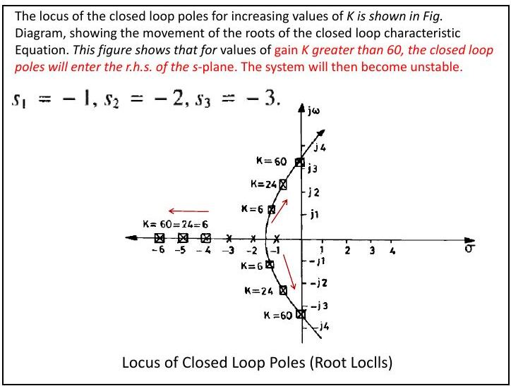
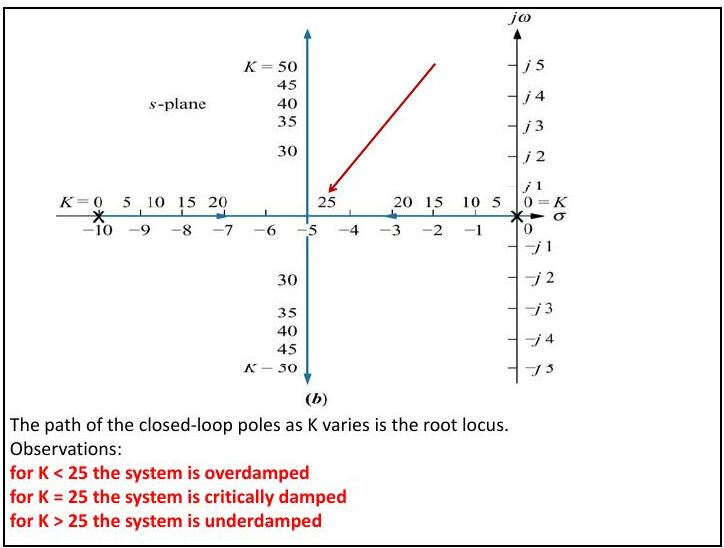
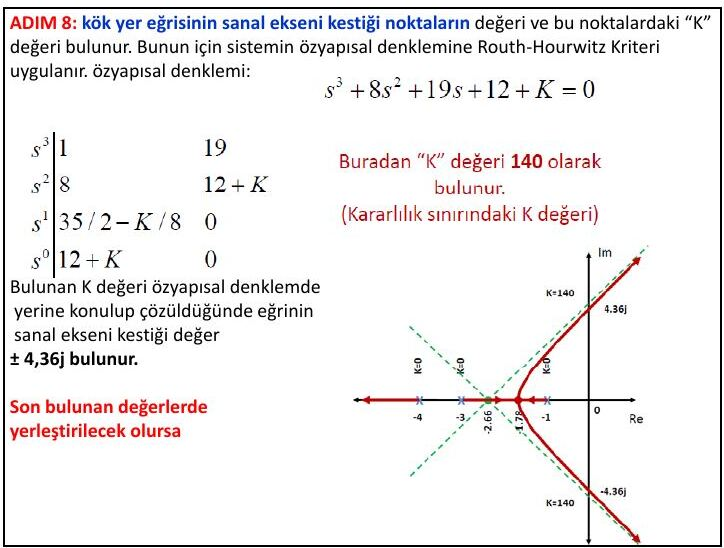
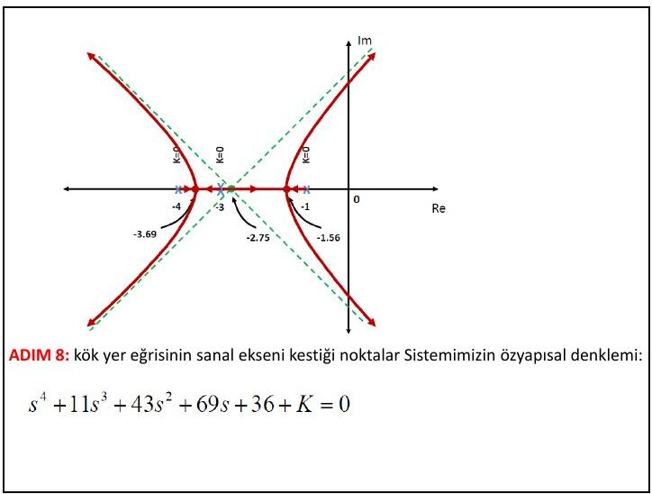
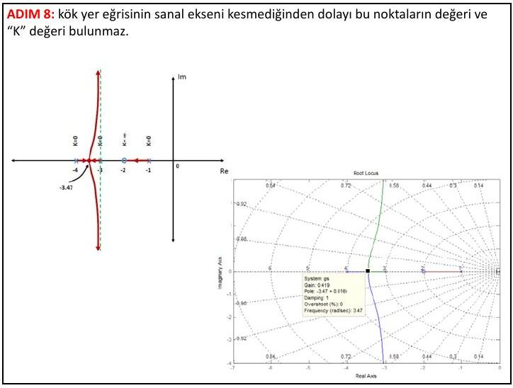
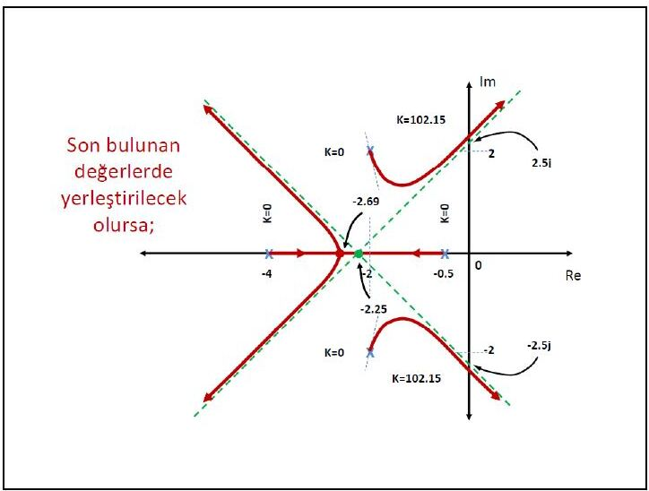

· EEM322
EEM322 Denetim Sistemleri: Ders 8 – Kök Yer Eğrisi (Root Locus), Açı ve Genlik Koşulu, Çizim Adımları
EEM322 – Denetim Sistemleri · 26.07.2013 · 16.10.2026
Bu yazı, Başkent Üniversitesi EEM322 Denetim Sistemleri dersinin 8. ders notlarını bir araya getiriyor: "EEM322L8: Root locus (kök yer eğrisi)" ve "EEM322L8b: Root locus – çizim yöntemi ve adımları". Notlar dersi veren Hamit Erdem'e ait; sayfa başlarında 26.07.2013 tarihi var. İlki İngilizce ağırlıklı 10, ikincisi Türkçe 15 sayfalık, sayfa başına iki slayt yerleştirilmiş PDF'ler; Ders 7 notunun devamıdır. Aşağıda içerik aktarıldı, hesaplar ve kök yer eğrisi çizimleri yazıya döküldü. Orijinal PDF'ler yazının sonunda ZIP olarak indirilebilir.
Kök yer eğrisi nedir?
Frekans bölgesinde analiz için dört temel grafik yöntem vardır: kök yer eğrisi, Bode diyagramları, Nyquist diyagramları ve Nichols diyagramları. Kök yer eğrisi, kapalı çevrim kutuplarının değişimini gösterir: kapalı çevrimin karakteristik denklemi
- 1 + K G(s) = 0
olmak üzere kök yer eğrisi, K parametresi 0'dan sonsuza değiştirilirken bu denklemin köklerinin izlediği yollardır.
İleri yolda K ve G(s), geri beslemede H(s) olan sistemde açık çevrim transfer fonksiyonu T₁(s) = K G(s)H(s), kapalı çevrim transfer fonksiyonu T(s) = KG(s)/(1 + KG(s)H(s))'dir. Denetim probleminin özü şudur:
- Açık çevrim transfer fonksiyonunun kutupları paydaya bakarak kolayca bulunur ve sistem kazancındaki değişimden etkilenmez.
- Kapalı çevrim transfer fonksiyonunun kutuplarını bulmak daha zordur ve kazanca bağlıdır.
Kök yer eğrisi, bir sistem parametresi değiştikçe kapalı çevrim kutuplarının yerini gösteren grafik bir yöntemdir; birinci ve ikinci dereceden sistemlere olduğu kadar yüksek dereceli sistemlere de uygulanabilir. Sistem başarımının nitel bir tanımını, kararlılığın grafik gösterimini ve kararlılık/kararsızlık aralıklarını verir.
Tanım: Kök yer eğrisi, sistem parametrelerinin değişimiyle kapalı döngü köklerinin s düzlemindeki yerini gösteren grafiktir. Kapalı döngü sistemlerin geçici rejim cevap karakteristikleri kapalı döngü kutuplarının yerlerine bağlıdır; sistem değişken kazançlıysa kutuplar seçilen kazanca göre değişir. Amaç: istenen sistem cevabını elde etmek için uygun kutupları seçmek ve bu kutuplar için sistem kazancını belirlemektir.
Örnek: K/(s(s + 2))
Kapalı çevrim C(s)/R(s) = K/(s(s + 2) + K), karakteristik denklem s² + 2s + K = 0, kökler s = −1 ± √(1 − K).
- K = 0'da kapalı çevrim kutupları açık çevrim kutuplarındadır (0 ve −2).
- 0 < K < 1'de kutuplar gerçel eksendedir.
- K > 1'de kutuplar karmaşıktır; gerçel kısmı −1'dir, sanal kısmı K ile artar. Basamak yanıtları K = 0,5; 1; 2; 15 ve 50 için çizilmiş: K büyüdükçe aşım artar.
Örnek: K/((s + 1)(s + 2)(s + 3))
Birim geri beslemeli sistemde açık çevrim G(s) = K/(s³ + 6s² + 11s + 6), karakteristik denklem s³ + 6s² + 11s + 6 + K = 0. Tesisin üç kutbu (−1, −2, −3) negatif olduğundan geri beslemesiz sistem kararlıdır. K arttıkça kapalı çevrim kutupları:
- K = 0: s₁ = −1, s₂ = −2, s₃ = −3 (açık çevrim kutupları)
- K = 6: s₁,₂ = −1 ± j√2, s₃ = −4
- K = 24: s₁,₂ = −0,5 ± j√23/2, s₃ = −5
- K = 60: s₁,₂ = ±j√11, s₃ = −6

K > 60 için kapalı çevrim kutupları sağ yarı düzleme geçer ve sistem kararsız olur.
Örnek: CameraMan kamera sistemi
Kızılötesi algılayıcı taşıyan kişiyi otomatik izleyen bir kamera sisteminde açık çevrim G₀(s) = K₁K₂/(s(s + 10)) = K/(s(s + 10)), kapalı çevrim G_c(s) = K/(s² + 10s + K). K değiştikçe kutup yerleri:
| K | Kutup 1 | Kutup 2 |
|---|---|---|
| 0 | −10 | 0 |
| 5 | −9,47 | −0,53 |
| 10 | −8,87 | −1,13 |
| 15 | −8,16 | −1,84 |
| 20 | −7,24 | −2,76 |
| 25 | −5 | −5 |
| 30 | −5 + j2,24 | −5 − j2,24 |
| 35 | −5 + j3,16 | −5 − j3,16 |
| 40 | −5 + j3,87 | −5 − j3,87 |
| 45 | −5 + j4,47 | −5 − j4,47 |
| 50 | −5 + j5 | −5 − j5 |

Gözlemler: K < 25 iken sistem aşırı sönümlü, K = 25'te kritik sönümlü, K > 25'te az sönümlüdür.
Karmaşık sayılar ve vektör gösterimi
Her karmaşık sayı σ + jω bir vektörle gösterilebilir. (s + a) karmaşık bir sayıdır ve fonksiyonun −a'daki sıfırından s noktasına çizilen vektörle temsil edilir; kutupsal biçimde M∠θ yazılabilir. Örneğin F(s) = s + 7 fonksiyonu s = 5 + j2 noktasında 12 + j2 olur.
F(s) = ∏(s + zᵢ) / ∏(s + pⱼ) (m sıfır, n kutup) için her çarpan bir vektördür ve F(s)'nin herhangi bir s noktasındaki değeri:
- Genlik: M = |F(s)| = ∏|s + zᵢ| / ∏|s + pⱼ| = (sıfır uzunlukları çarpımı) / (kutup uzunlukları çarpımı)
- Açı: θ = Σ∠(s + zᵢ) − Σ∠(s + pⱼ) = (sıfır açıları toplamı) − (kutup açıları toplamı)
Örnek: F(s) = (s + 1)/(s(s + 2)), s = −3 + j4 noktasında:
- −1'deki sıfır: √20∠116,6°; orijindeki kutup: 5∠126,9°; −2'deki kutup: √17∠104,0°
- |F(s)|∠F(s) = √20/(5√17) ∠(116,6° − 126,9° − 104,0°) = 0,217∠−114,3°
Örnek: F(s) = (s + 2)(s + 4)/(s(s + 3)(s + 6)), s = −7 + j9 noktasında doğrudan yerine koyarak ya da vektörlerle hesaplandığında F(s) = −0,0339 − j0,0899 = 0,096∠−110,7°.
Açı ve genlik koşulu
T(s) = KG(s)/(1 + KG(s)H(s)) paydası sıfır olduğunda:
- KG(s)H(s) = −1 = 1∠(2k + 1)180°, k = 0, ±1, ±2, …
Kapalı çevrim kutupları iki koşulu sağlamalıdır:
- Genlik koşulu: |KG(s)H(s)| = 1 ⇒ K = 1/(|G(s)||H(s)|)
- Açı koşulu: ∠KG(s)H(s) = (2k + 1)180°
Bir s değeri KG(s)H(s)'de yerine konduğunda bir karmaşık sayı çıkar; açısı 180°'nin tek katıysa o s, belli bir K için sistemin kutbudur. K skaler olduğundan açı koşulu yalnız G(s)H(s)'e bakar; K ise kutup yerine konduğunda G(s)H(s) genliğinin tersidir.
Örnek: KG(s)H(s) = K/(s(s + 10)) için K = 5'te kapalı çevrim kutupları −9,47 ve −0,53'tedir; s = −9,47 ve K = 5 konursa KG(s)H(s) = −1 çıkar (tablodaki diğer noktalar için de aynı sonuç elde edilir).
Örnek: KG(s)H(s) = K(s + 3)(s + 4)/((s + 1)(s + 2)), kapalı çevrim T(s) = K(s + 3)(s + 4)/[(1 + K)s² + (3 + 7K)s + (2 + 12K)].
- s = −2 + j3 noktası için sıfır açıları eksi kutup açıları: θ₁ + θ₂ − θ₃ − θ₄ = 56,31° + 71,57° − 90° − 108,43° = −70,55°. Bu 180°'nin tek katı olmadığından −2 + j3 kapalı çevrim kutbu değildir.
- s = −2 + j(√2/2) noktası ise kök yer eğrisi üzerindedir: K = (kutup uzunlukları)/(sıfır uzunlukları) = L₃L₄/(L₁L₂) = (√2/2)(1,22)/((2,12)(1,22)) = 0,33.
Kök yer eğrisi çizim adımları
Ele alınan sistem: G(s) = 1/((s + 1)(s + 3)(s + 4)), H(s) = 1. Özyapısal (karakteristik) denklem:
- 1 + K/((s + 1)(s + 3)(s + 4)) = 0 ⇒ s³ + 8s² + 19s + (12 + K) = 0
Notta K = 0, 1, 2, 2,11, 5, 15, 45, 140 ve 200 için köklerin yerleri MATLAB çizimleriyle tek tek gösteriliyor: iki kök −1,78'de buluşup gerçek eksenden ayrılıyor, K = 140'ta sanal ekseni ±j4,36'da kesiyor.
- Kol sayısı: Özyapısal denklemin derecesi (açık döngü kutup sayısı) kol sayısını verir; burada 3 kol.
- Başlangıç ve bitiş noktaları: Açık döngü kutupları başlangıç (K = 0, "x" ile), sıfırları bitiş (K = ∞, "o" ile) noktalarıdır. Burada −1, −3 ve −4'te üç kutup var, sıfır yok.
- Gerçek eksen üzerindeki kollar: Gerçek eksende en soldaki kutup ya da sıfırın solundan başlayarak test noktaları seçilir; noktanın sağındaki toplam kutup ve sıfır sayısı tekse kök yer eğrisi oradan geçer, çiftse geçmez. Karmaşık kutup ve sıfırlar bu teste dahil edilmez. Burada kollar −∞ ile −4 arasında ve −3 ile −1 arasındadır.
- Asimptot açıları: α = 180°(2k + 1)/(n − m); n = 3, m = 0 için α = 60°(2k + 1): 60°, 180°, 300°.
- Asimptotların gerçek ekseni kestiği nokta: σ = (Σpᵢ − Σzᵢ)/(n − m) = (−1 − 3 − 4)/3 = −8/3 ≈ −2,66.
- Gerçek eksenden ayrılma noktası: K = −(s³ + 8s² + 19s + 12), dK/ds = −(3s² + 16s + 19) = 0 ⇒ s = −1,78 ve s = −3,54. −3,54 kök yer eğrisinin olmadığı bir bölgede kaldığından ayrılma noktası −1,78'dir.
- Kutuplardan ayrılma açıları: Açı koşulu uygulanır. −4'teki kutup için φ₋₁ + φ₋₃ + φ₋₄ = −180°, burada −180 − 180 + φ₋₄ = −180 (toplamı 360° olan açılar göz ardı edilir) ⇒ φ₋₄ = −180°; benzer şekilde φ₋₃ = 0° ve φ₋₁ = −180°. Bir noktada karşı karşıya gelen eğriler tam zıt yönlerde hareket eder.
- Sanal eksen kesişimi: Routh-Hurwitz kriteri uygulanır:
| Satır | 1. sütun | 2. sütun |
|---|---|---|
| s³ | 1 | 19 |
| s² | 8 | 12 + K |
| s¹ | 35/2 − K/8 | 0 |
| s⁰ | 12 + K | 0 |
s¹ satırının sıfır olduğu K = 140 kararlılık sınırıdır. Bu K ile 8s² + 152 = 0 ⇒ eğri sanal ekseni ±j4,36'da keser.

Katlı kutup durumu
G(s) = 1/((s + 1)(s + 3)²(s + 4)), H(s) = 1.
- Kol sayısı 4 (açık döngü kutup sayısı).
- −1 ve −4'te tek katlı, −3'te çift katlı olmak üzere 4 kutup var.
- Gerçek eksen kolları −4 ile −3 ve −3 ile −1 arasında.
- α = 180°(2k + 1)/4 = 45°(2k + 1): 45°, 135°, 225°, 315°.
- σ = (−1 − 3 − 3 − 4)/4 = −11/4 = −2,75.
- K = −(s⁴ + 11s³ + 43s² + 69s + 36); dK/ds = 0'dan s₁ = −3,69, s₂ = −3,00 (kutbun kendisi, olamaz), s₃ = −1,56. Ayrılma noktaları −3,69 ve −1,56.
- Ayrılma açıları: φ₋₁ + φ₋₃₁ + φ₋₃₂ + φ₋₄ = −180 ⇒ φ₋₄ = 0°, φ₋₁ = −180°. Katlı kutupların olduğu noktada eğri zıt yönlerde hareket eder: φ₋₃₁ = −180°, φ₋₃₂ = 0°.
- s⁴ + 11s³ + 43s² + 69s + 36 + K = 0 için Routh tablosu:
| Satır | 1. sütun | 2. sütun | |
|---|---|---|---|
| s⁴ | 1 | 43 | K + 36 |
| s³ | 11 | 69 | 0 |
| s² | 404/11 | K + 36 | 0 |
| s¹ | 5880/101 − 121K/404 | 0 | 0 |
| s⁰ | K + 36 | 0 | 0 |
Buradan kararlılık sınırı K = 194,38; s² satırıyla eğrinin sanal ekseni kestiği değerler ±j2,5 bulunur.

Sıfır olması durumu
G(s) = (s + 2)/((s + 1)(s + 3)(s + 4)), H(s) = 1.
- Kol sayısı yine 3.
- −1, −3 ve −4'te üç kutup (K = 0), −2'de bir sıfır (K = ∞).
- Gerçek eksen kolları −4 ile −3 ve −2 ile −1 arasında.
- n = 3, m = 1 için α = 90°(2k + 1): 90° ve 270°.
- σ = (−1 − 3 − 4 − (−2))/(3 − 1) = −3.
- K = −(s³ + 8s² + 19s + 12)/(s + 2); dK/ds = 0'dan s₁ = −3,47 ve s₂,₃ = −1,77 ± j0,79 (olamaz). Ayrılma noktası −3,47.
- Ayrılma ve sıfıra varma açıları: φ₋₁ + φ₋₃ + φ₋₄ − θ₋₂ = −180 ⇒ φ₋₄ = −180°; benzer adımlarla φ₋₃ = −180°, θ₋₂ = 0°, φ₋₁ = −180°.
- Kök yer eğrisi sanal ekseni kesmediğinden bu noktalar ve K değeri bulunmaz; sistem her K için kararlıdır.

Karmaşık kutup durumu
G(s) = 1/((s + 0,5)(s² + 4s + 8)(s + 4)), H(s) = 1.
- Kol sayısı 4.
- −0,5 ve −4'te tekil, −2 ± j2'de karmaşık olmak üzere 4 kutup var.
- Gerçek eksende yalnız −4 ile −0,5 arasında kol var (karmaşık kutup ve sıfırlar bu tespitte hesaba katılmaz).
- α = 45°(2k + 1): 45°, 135°, 225°, 315°.
- σ = (Σpᵢ)/4; notta (−1 − 4 − 2 − 2)/4 = −9/4 = −2,25 bulunuyor.
- K = −(s⁴ + 8,5s³ + 28s² + 44s + 16); dK/ds = 0'dan s₁ = −2,69, s₂,₃ = −1,84 ± j0,83 (olamaz). Ayrılma noktası −2,69.
- Ayrılma açıları: gerçek kutuplar için φ₋₀,₅ = −180° ve φ₋₄ = 0°. −2 + j2'deki kutup için açı kuralı: [180 − arctan(2/1,5)] + arctan(2/2) + φ₋₂₁ + arctan(4/0) = −180 ⇒ φ₋₂₁ + 126,87 + 45 + 90 = −180 ⇒ φ₋₂₁ = −81,87°, φ₋₂₂ = +81,87°.
- s⁴ + 8,5s³ + 28s² + 44s + 16 + K = 0 için Routh tablosu:
| Satır | 1. sütun | 2. sütun | |
|---|---|---|---|
| s⁴ | 1 | 28 | K + 16 |
| s³ | 17/2 | 44 | 0 |
| s² | 388/17 | K + 16 | 0 |
| s¹ | 3690/97 − 289K/776 | 0 | 0 |
| s⁰ | K + 16 | 0 | 0 |
Kararlılık sınırı K = 102,15; s² satırıyla sanal eksen kesişimi ±j2,28 bulunur.

Not: Karmaşık kutup örneğinde asimptot merkezi hesabında −0,5'teki kutup −1 olarak yazılmış. Doğrusu σ = (−0,5 − 4 − 2 − 2)/4 = −8,5/4 = −2,125'tir (karakteristik denklemdeki s³ katsayısı 8,5 ile de uyumlu). Ayrıca son çizimde sanal eksen kesişimi ±2,5j olarak etiketlenmiş; Routh tablosundan bulunan değer ±j2,28'dir (K + 16 = 118,15 ve (388/17)s² + 118,15 = 0 ⇒ s ≈ ±j2,275).